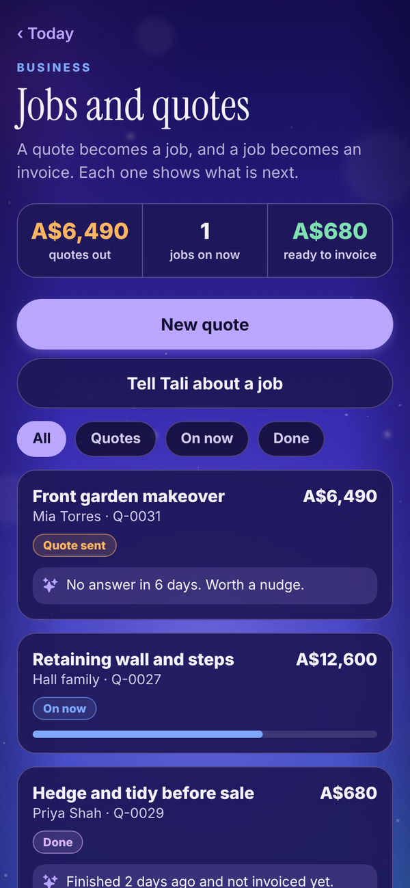
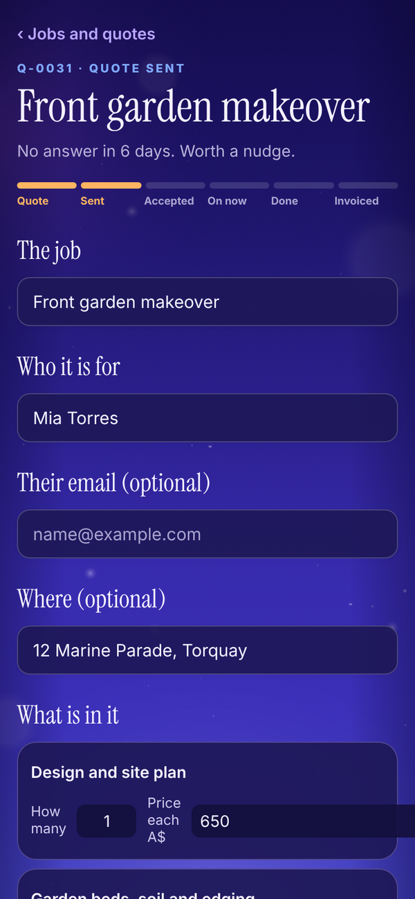
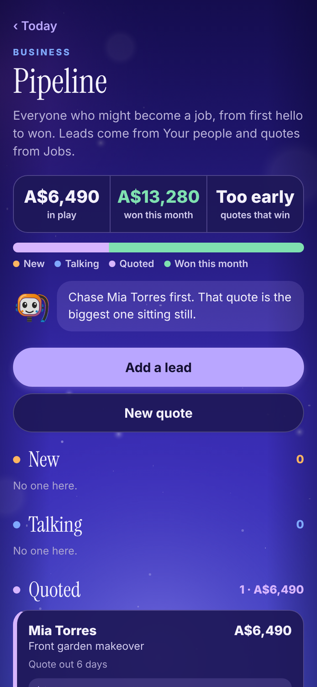
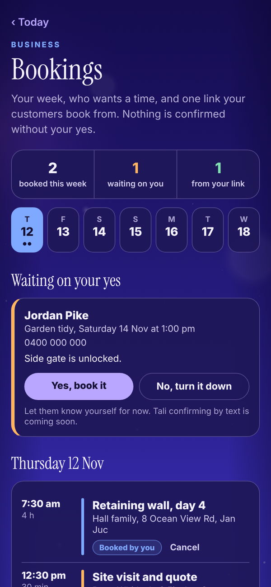
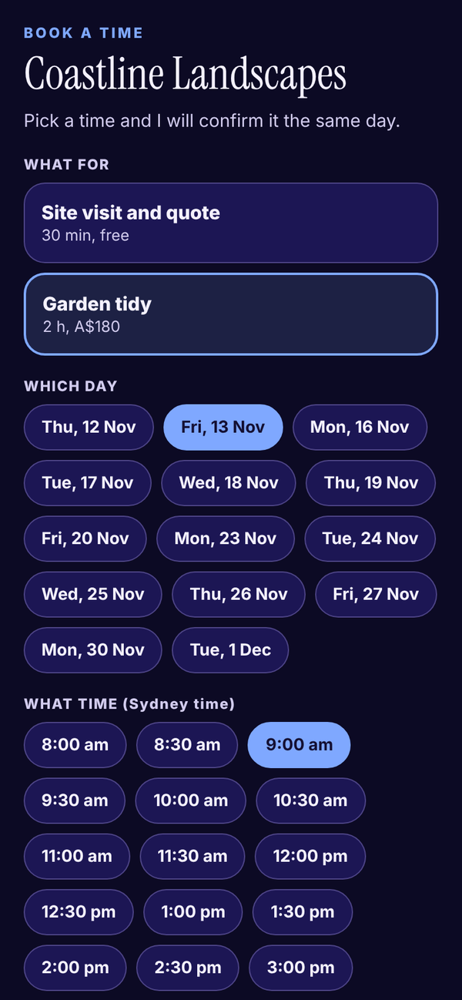
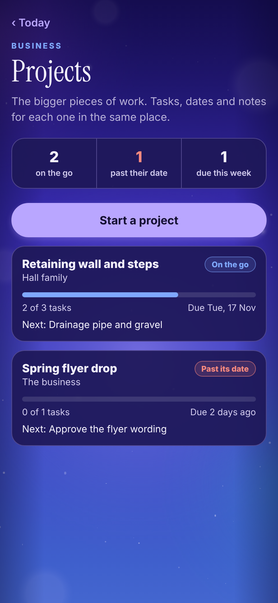

Tali HQ guide
Jobs, quotes, pipeline, bookings and projects
The tools that come with Tali HQ Business. Quote a job and turn it into an invoice, see who to chase next, take bookings from one link and keep bigger pieces of work on track.
Business
Tali HQ Business adds the tools a small business runs on. You reach them from the tools grid on Today in Business mode, and from Your world under Work. On other plans each tool shows what it does and a button to Plans.
Jobs and quotes#
A quote becomes a job, and a job becomes an invoice. Each card shows what is next.


- Tap New quote, or Tell Tali about a job and let her start it.
- Add what the job is, who it is for and the lines that make it up, each with how many and a price. Switch on Add GST to add 10% on top.
- Share the quote as a PDF. It matches your invoices.
- Move it along as it happens: sent, accepted, on now and done.
- When the job is done, one tap turns it into a draft invoice.
Pipeline#
Everyone who might become a job, from first hello to won. Leads come from Your people and quotes come from Jobs, stacked by stage with the value of each. A lead can carry what it could be worth, and Tali tells you who to chase first.

Bookings#
Your week, your services and one link your customers book from.


- Add your services, each with a length and a price.
- Share your booking link, which looks like talihq.com.au/book/your-name. Nobody needs to sign in to use it.
- A request from the link waits under Waiting on your yes. Tap Yes, book it or No, turn it down.
- The public page only shows your business name, your services and the times already taken.
Projects#
The bigger pieces of work. Each project has tasks, who is doing each one, a due date and notes, and shows whether it is on the go, paused or done.
